Professional Experience
GIS Analyst with over seven(7) years of experience in GIS and remote sensing, and two years in environmental planning and water quality management. I lead GIS-based analyses supporting the Areawide Water Quality Management (208) Plan, climate resilience assessments, and Permit-to-Install (PTI) compliance reviews.
Spatial Accessibility, Hydrologic modelling, watershed delineation, SWAT Modeling, infrastructure vulnerability modelling, Water Quality & Non-Point Source Pollution analysis, flood modeling.
Regional wastewater planning, PTI compliance reviews and Areawide Water Quality Management (208) Plan support.
Climate resilience assessments and environmental impact assessments combining spatial analytics with policy understanding.
Community Water Resources Advisory Group coordinating, Public communication and stakeholder engagement delivering data-driven solutions for sustainable communities.
Skills & Tools
GIS & Hydrological modeling
ArcGIS Pro, ArcGIS API for Python, QGIS, WebGIS (ArcGIS Online, Folium in python), SWAT Modeling, HEC RAS
Programming and AI
Python, R, Google Earth Engine, Machine Learning, KNIME, AI Prompt Writing
Environmental Planning
Permit-to-Install Compliance Analysis, Policy Review, Environmental Impact Assessment
Water Systems
Wastewater & Public Drinking Water Planning
Engagement
Stakeholder Engagement, Public Speaking and Presentation, Policy Communication
Projects
Each project presents a brief narrative supported by static maps or web interactive map.
Sample of Other Spatial Analysis
1 / 23Selected maps from analysis and planning work. Advances automatically — hover to pause, or use the arrows.
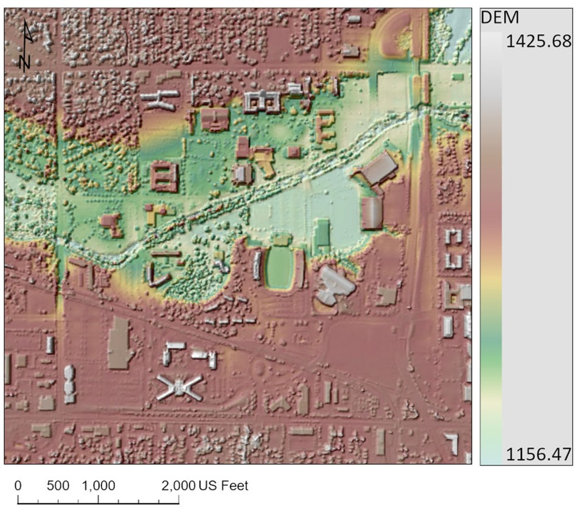
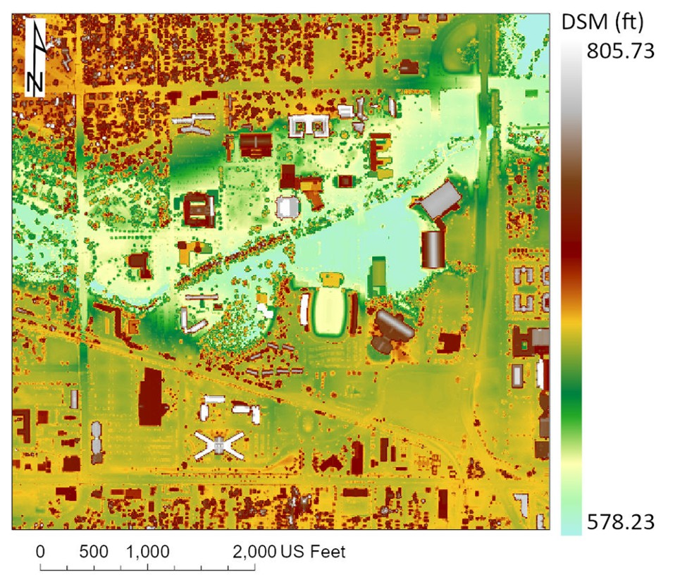
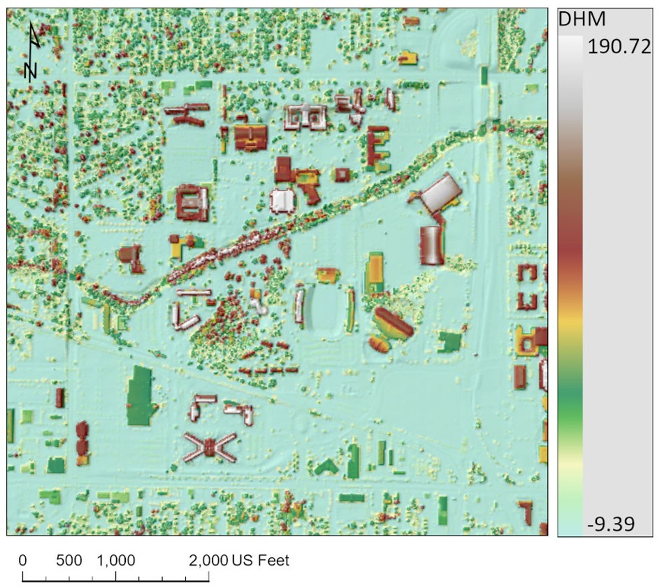
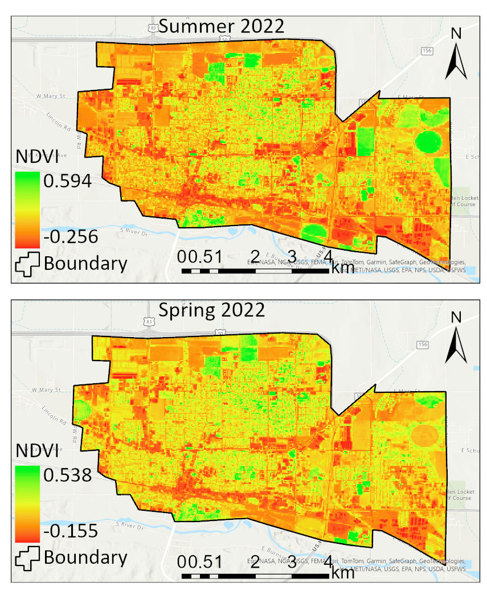
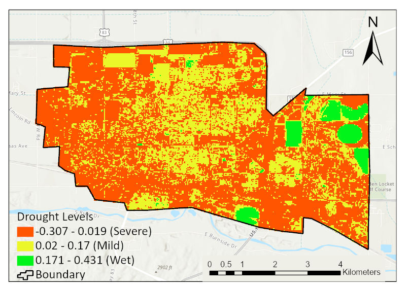
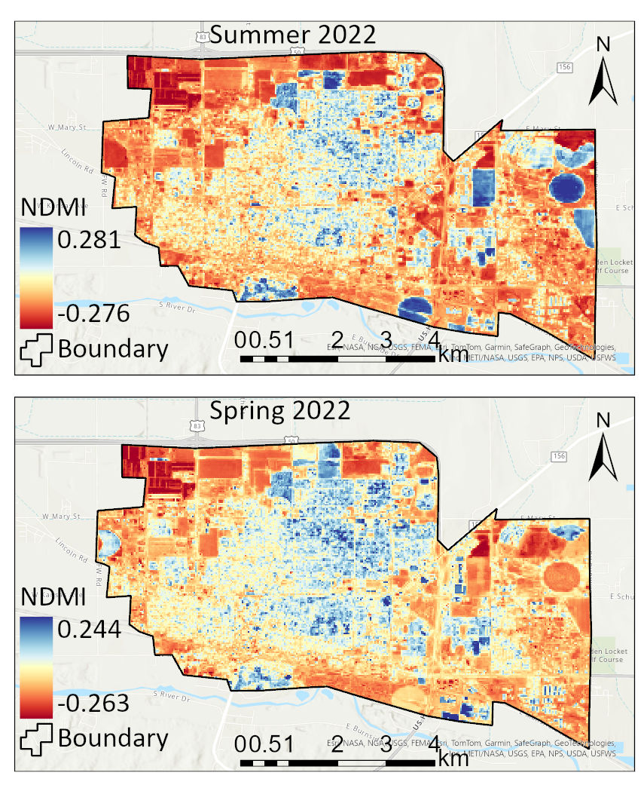
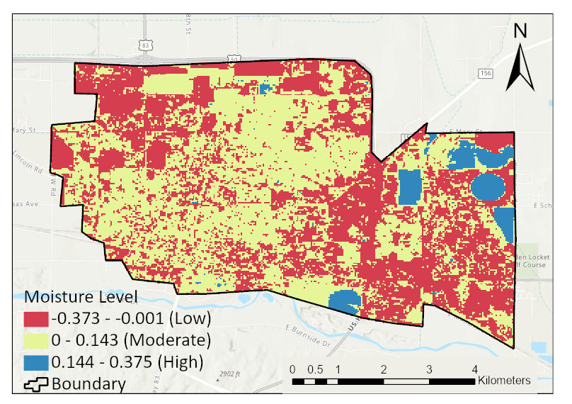


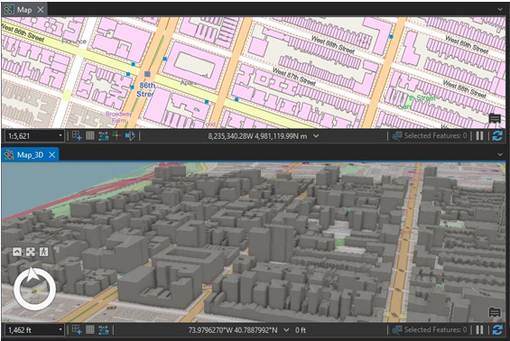


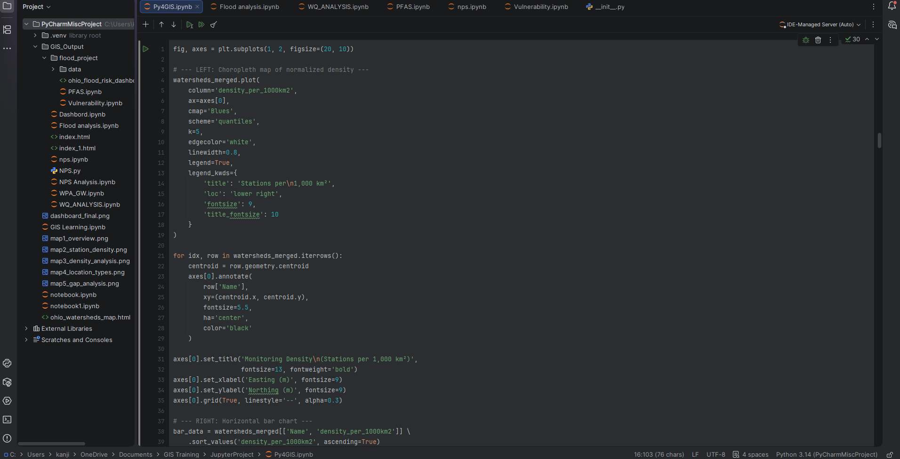
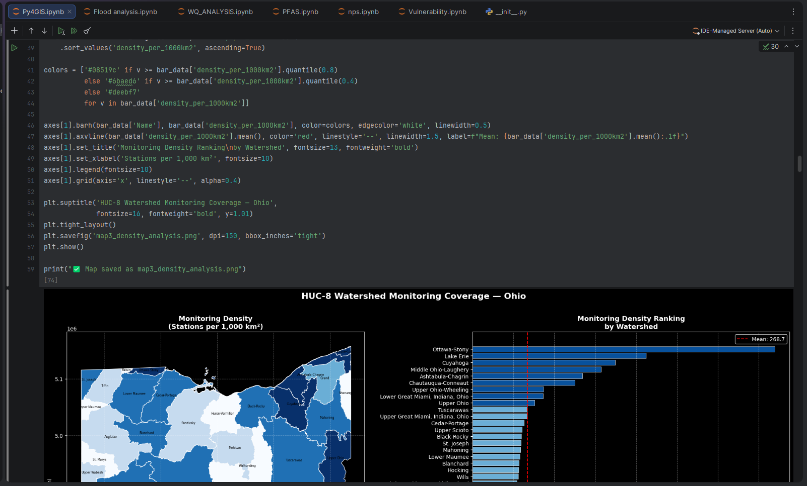
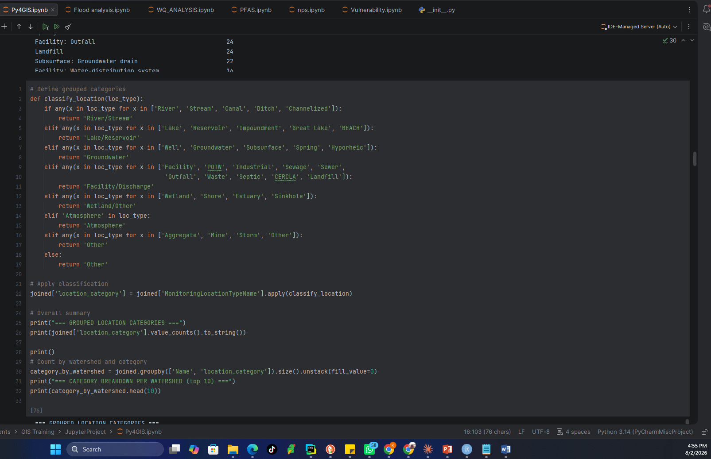
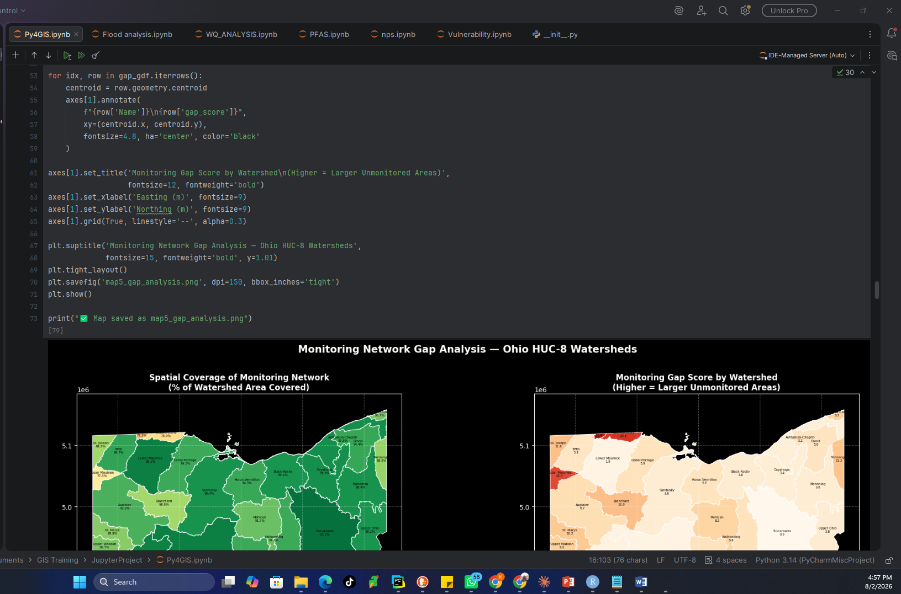
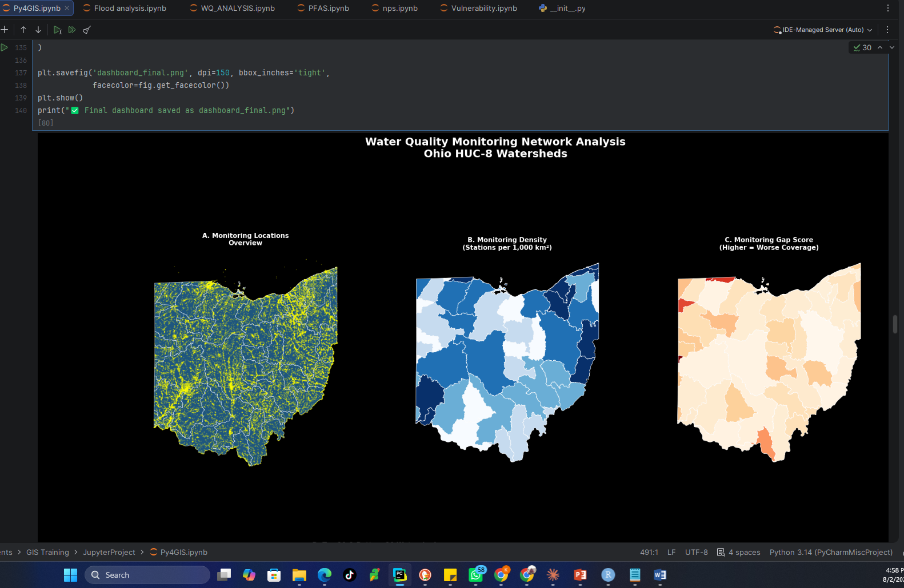
Spatial Accessibility to Potable Water, Sibi
Two-Step Floating Catchment Area analysis of household access to boreholes and standpipes in Sibi, Ghana. Findings published in Applied Geography.
Interactive Maps & Dashboard
Webmaps and dashboards built with ArcGIS Online and Python.
Ohio Watershed PFAS Contamination Risk — ML Prediction Map
Open Full Dashboard ↗Random Forest model (CV F1 = 0.980 ± 0.002) predicting PFAS contamination risk across 1,541 Ohio HUC-12 watersheds. Toggle layers to explore the different layers that were used in this prediction.
Open the full dashboard for ML feature importance, confusion matrix, and risk charts.
Ohio HUC-8 Water Quality Monitoring Coverage & Gap Assessment
Open Full Dashboard ↗Spatial analysis of water quality monitoring coverage across all 44 Ohio HUC-8 watersheds. 814 monitoring locations from 8 organizations. Please hover over watersheds to explore station counts, and coverage.
Hover over watersheds for monitoring stats. Open the full dashboard for coverage charts, gap analysis, and monitoring organization breakdown.
Lucas County Infrastructure Vulnerability Assessment — Flood Risk, Bridges & Roads
Open Full Map ↗Data: FEMA National Flood Hazard Layer, National Bridge Inventory (NBI), TIGER/Line road network for Lucas County, Ohio. Method: Spatial multi-criteria vulnerability assessment using the IPCC framework (formula) below.
Vulnerability Assessment Framework (IPCC, 2007)
Source: IPCC (2007) · Füssel & Klein (2006) · FHWA Bridge Vulnerability Framework
Click on bridge circles to explore vulnerability scores, deck condition, and flood exposure. Toggle layers using the controls in the top right corner.